Regularization
Let us first import some libraries:
import numpy as np
%matplotlib inline
import matplotlib.pyplot as plt
from IPython.core.debugger import set_trace
import warnings
warnings.filterwarnings('ignore')
import itertools
Let's summarize what we know about linear regression:
\begin{align*} \textbf{Model:} \;\;\;\;\;\;\;\; \hat{y}& =f_w(x)=\mathbf{w}^{\top}\mathbf{x}\;\;\;\mathbb{R}^D\rightarrow \mathbb{R} \\ \textbf{Cost Function:} \;\;\;\;\;\; J_w & = \frac 1N \sum_n \frac 12 \left(y^{(n)}-\hat{y}^{(n)}\right)^2=\frac 12 ||\mathbf{y}-\mathbf{X}\mathbf{w}||^2 \\ \textbf{Solution for }\mathbf{w}^*\textbf{:}\;\;\;\;\;\; \mathbf{w}^* & = \left(\mathbf{X}^{\top}\mathbf{X}\right)^{-1}\mathbf{X}\mathbf{y} \end{align*}Or, we can use gradient descent:
\begin{align*} \textbf{Partial Derivatives:} \;\;\;\;\;\;\;\; \frac{\partial}{\partial w_d}J_w & = \frac 1N \sum_n \left(y^{(n)}-\hat{y}^{(n)}\right)x_d^{(n)} \\ \textbf{Gradient:}\;\;\;\;\;\;\;\;\;\; \nabla J(w) & = \frac 1N \sum_n \left(y^{(n)}-\hat{y}^{(n)}\right)x^{(n)}=\frac 1N \mathbf{X}^{\top}\left(\hat{\mathbf{y}}-\mathbf{y}\right) \\ \textbf{Weight Updates:}\;\;\;\;\;\;\;\;\;\;\; w^{\{t+1\}} & \leftarrow w^{\{t\}}-\alpha\nabla J\left(w^{\{t\}}\right) \end{align*}What if a linear fit is not the best? In this case, how model is too simple ot not expressive enough. And so we can decide to use a nonlinear basis to create new nonlinear features from the existing ones:
\begin{align*} \textbf{Replace Original Features in:}\;\;\;\;\;\;\;\;\;\;\;\;\;\;\;\;\; f_w(x) & = \sum_d w_d x_d \\ \textbf{With Nonliear Basis:}\;\;\;\;\;\;\;\;\;\;\;\;\;\;\;\;\; f_w(x) & = \sum_d w_d \phi_d(x) \\ \textbf{Linear Least Squares Solution:}\;\;\;\;\;\;\;\;\;\; \left(\Phi^{\top}\Phi\right)\mathbf{w}^* & = \phi^{\top}\mathbf{y} \end{align*}Where:
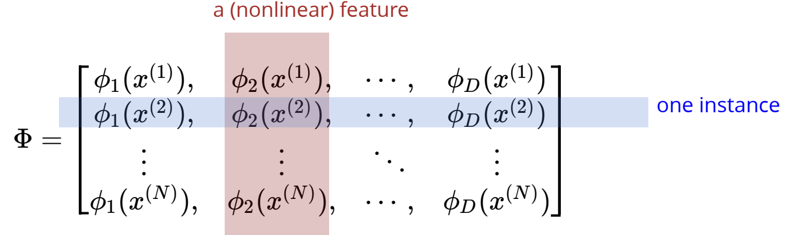Some examples are shown below as possible bases examples to choose from to increase the expressiveness of your model
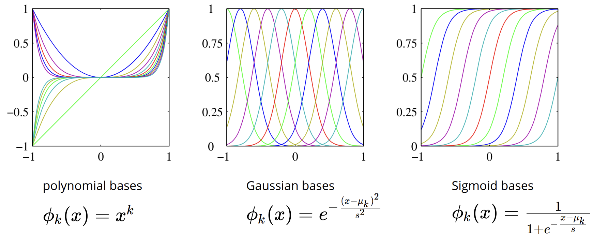Let's consider an example with Gaussian basis. Suppose we generate some scatter data using the following non-linear equation: $y^{(n)}=\sin\left(x^{(n)}\right)+\cos\left(\sqrt{\left|x^{(n)}\right|}\right)+\epsilon$, where the $\epsilon$ term is meant to mimic noise in the data. In the below plot, the blue curve is this function, and the green line is our fitted curve using 10 Gaussian basis functions (also lightly shown in the graph):
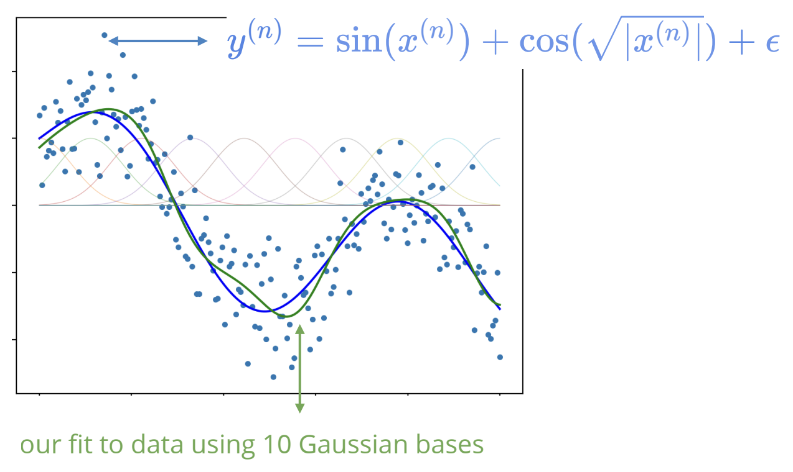What's happening is that our fitted function is simply takes a scatter data point, which lies at some $x$ value, and along this vertical $x-$line, any Gaussian basis curves (shown in the image) that intersect this vertical line, will have a non-zero weight associated with it. All other Gaussian basis curves will have an entry of $0$. Then, the output to our fitted curve is a summation of our Gaussian bases multiplied by this weight, or rather weight vector, which in this case, would be a $10-$dimensional vector.
And so, the prediction of our new instance will become:
$$f(x')=\phi(x')^{\top}\left(\Phi^{\top}\Phi\right)^{-1}\Phi^{\top}\mathbf{y}$$Where $x'$ is the new instance, $\phi(x')$ is the features evaluated for the new point, and $\left(\Phi^{\top}\Phi\right)^{-1}\Phi^{\top}\mathbf{y}$ are the weights found using linear least squares.
In our example above, we only used 10 bases. Why can't we use more so we can fit more of our data points? Below show an example of the fitted function for an increasing number of Gaussian bases:
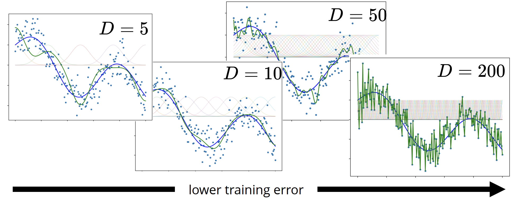So our fit with 200 bases is actually perfect (we touch every data point) and our cost $J(w)$ is zero, so what's wrong with this? Well, for starters, this function looks awful, and as we can see, it's far from the true function that we used to sample our data from (the curve shown in blue).
Now, which of these fitted functions perform best with new test data? Since we have our function defined, we sample some new additional data from it and assess which fitted function most accuratley captures the new data.
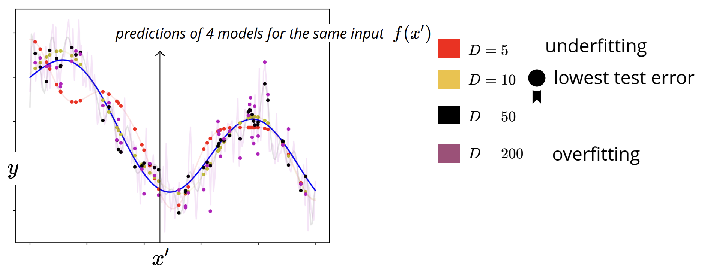What we see above is that if the model is not expressive enough - in that we have too few bases to work with - we underfit our data, and our model can never becomes as complex as the true distribution we want to match. On the other hand, if we make our model too complex or too expressive, we overfit to our training data and thus our test performance is not nearly as good (look at how much error are associated with the purple dots). And of course, it is a balance of somewhere in between these two extremes where our test performance is the best. So the natural question is that is there anything we can do on the model design side to have an expressive model, but not let it overfit?
Another consequence of overfitting is that our weights can becomes really large. The dashed lines in the below graph are the Gaussian bases scaled by the weights, i.e $w_d\phi_d(x)$ for all $d$, and we can see for more and more bases, the weights becomes larger and larger.
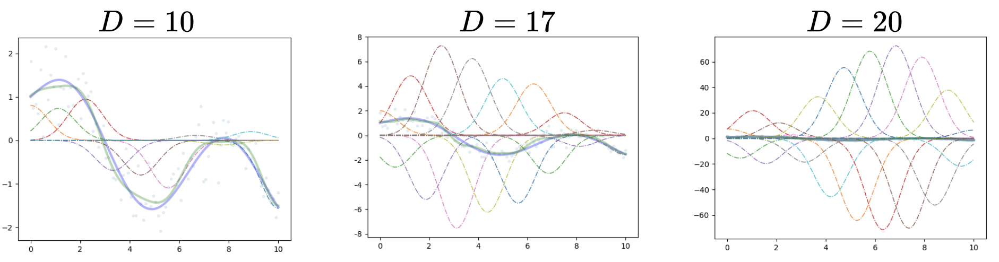A way we can prevent this is to add a penalty to our cost function to control how large the weights can become.
L1 and L2 Regularization
For L2 regularization, or ridge regression, we use a linear least squares regresion method with the added penalty to our weights in the form of:
$$J(w)=\frac 12 ||\mathbf{X}\mathbf{w}-\mathbf{y}||^2+\frac{\lambda}{2}||\mathbf{w}||^2_2$$Where the first term is our familiar sum of squared error: $\frac 12 \sum_n \left(y^{(n)}-\mathbf{w}^{\top}\mathbf{x}\right)^2$, the second term contains the squared L2 norm of $\mathbf{w}$, or rather $||\mathbf{w}||^2_2=\mathbf{w}^{\top}\mathbf{w}=\sum_d w_d^2$. Here, $\lambda>0$ is a regularization parameter that controls the strength of the regularization. If the weights become larger, so does our cost function.
Note it is a good practice not to penalize your bias or intercept, i.e by $\lambda\left(||\mathbf{w}||^2_2-w_0^2\right)$, as it is not linked to the dimension of our input.
We can see visually what happens to our cost function when we add this penalty term. First, plotting some contours:
def plot_contour(f, x1bound, x2bound, resolution, ax):
x1range = np.linspace(x1bound[0], x1bound[1], resolution)
x2range = np.linspace(x2bound[0], x2bound[1], resolution)
xg, yg = np.meshgrid(x1range, x2range)
zg = np.zeros_like(xg)
for i,j in itertools.product(range(resolution), range(resolution)):
zg[i,j] = f([xg[i,j], yg[i,j]])
ax.contour(xg, yg, zg, 100)
return ax
Creating some toy data:
N = 20
x = np.random.rand(N) * 10
y = -4*x + 10 + 2*np.random.randn(N)
And visualizing the regularized cost function we get:
cost = lambda w: .5*np.mean((w[0] + w[1]*x - y)**2)
l2_penalty = lambda w: np.dot(w,w)/2
l1_penalty = lambda w: np.sum(np.abs(w))
cost_plus_l2 = lambda w: cost(w) + 5*l2_penalty(w)
fig, axes = plt.subplots(ncols=3, nrows=1, constrained_layout=True, figsize=(15, 5))
plot_contour(cost, [-20,20], [-20,20], 50, axes[0])
axes[0].set_title(r'cost function $J(w)$')
plot_contour(l2_penalty, [-20,20], [-20,20], 50, axes[1])
axes[1].set_title(r'L2 reg. $||w||_2^2$')
plot_contour(cost_plus_l2, [-20,20], [-20,20], 50, axes[2])
axes[2].set_title(r'L2 reg. cost $J(w) + 5 ||w||_2^2$')
plt.show()
We notice when when sum the cost function (left image) with the L2 regularization (centre image), we get the result in the right image, where the L2 cost contours become more circular. This also helps with gradient descent, as it eases the degree of oscillations.
How does this new cost function affect the way in which we find our optimal weights? Well, walking through the math:
\begin{align*} J(w) & = \frac 12 \sum_{x,y\in \mathcal{D}} \left(\mathbf{y}-\mathbf{w}^{\top}\mathbf{x}\right)^2+\frac{\lambda}{2}\mathbf{w}^{\top}\mathbf{w} \\ \nabla J(w) & = \sum_{x,y\in \mathcal{D}} \mathbf{x}\left(\mathbf{w}^{\top}\mathbf{x}-\mathbf{y}\right)+\lambda \mathbf{w} \\ & = \mathbf{X}^{\top} (\mathbf{X}\mathbf{w}-\mathbf{y})+\lambda \mathbf{w}=0 \end{align*}And so we notice when using gradient descent, this new $\lambda$ term reduces the weights at each step, and so it is often termed as weight decay. And now we're left with solving the linear system of equations:
$$\left(\mathbf{X}^{\top}\mathbf{X}+\lambda \mathbf{I}\right)\mathbf{w}=\mathbf{X}^{\top}\mathbf{y}$$Which yields:
$$\mathbf{w}=\left(\mathbf{X}^{\top}\mathbf{X}+\lambda \mathbf{I}\right)^{-1}\mathbf{X}^{\top}\mathbf{y}$$This is actually pretty nice because the $\lambda \mathbf{I}$ term guarantees that the bracketed expression is invertible since it adds some non-zero value to the diagonal entries of $\mathbf{X}^{\top}\mathbf{X}$, and so we can have linearly dependent features and thus the solution will be unique.
Let's now look at an example of using a fit with polynomial bases. First, without regularization, we can use a polynomial fit using bases of increasing dimension, as shown below:
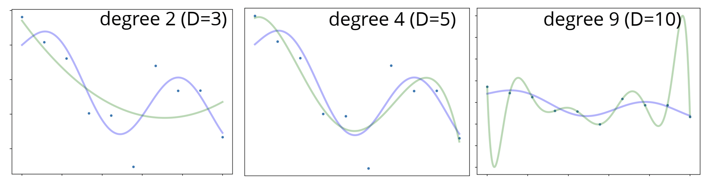And we can see with a $D=10$ polynomial we are over-fitting. This is because we can see of course the green fitted line is no where close to the distribution of the true sampled data (blue curve), and yet it manages to perfectly pass through every data point.
But now fixing $D=10$, let's add some regularization with $\lambda$ of varying sizes and observe how it controls the sizes of the weights and makes the fitted curve more behaved to the true distribution:
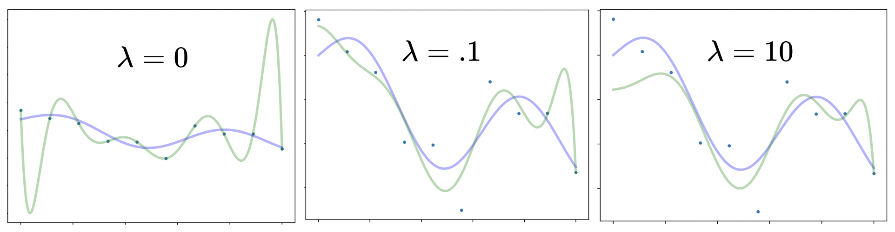How can we probabilistically interpret this new regularization technique? Well, to start, recall that for regression thus far, the weights have been chosen such that they represent a maximum likelihood estimate of some underlying distribution:
\begin{align*} \;\;\;\;\;\;\;\; w^{MLE} & = \arg\max_w p(\mathbf{y}|\mathbf{X},\mathbf{w}) \\ \text{Linear Regression:} \;\;\;\;\;\; w^{MLE} & = \arg\max_w \prod_{x,y\in \mathcal{D}} \mathcal{N}(\mathbf{y}|\mathbf{w}^{\top}\mathbf{x},\sigma^2) \\ \text{Logistic Regression:}\;\;\;\;\;\; w^{MLE} & = \arg\max_w \prod_{x,y\in \mathcal{D}}\text{Bernoulli}(\mathbf{y}|\sigma\left(\mathbf{w}^{\top}\mathbf{x}\right)) \end{align*}But recall we also discussed that you can derive estimators using Bayesian inference, which says there is some distribution and hence uncertainity over our model parameters. In practice, Bayesian inference can be a little too costly, so we have a happy middle ground of Maximum a Posteriori (MAP), where we get our model parameters by maximizing the posterior distribution, which recall is proprotional to the prior multipled by the likelihood, i.e:
$$\underbrace{p(\mathbf{w}|\mathbf{y},\mathbf{X})}_{\text{Posterior}}\propto \underbrace{p(\mathbf{w})}_{\text{Prior}}\underbrace{p(\mathbf{y}|\mathbf{w}\mathbf{X})}_{\text{Likelihood}}$$And so our MAP estimate is simply:
\begin{align*} w^{MAP} & = \arg\max_w p(\mathbf{w})p(\mathbf{y}|\mathbf{X},\mathbf{w}) \\ & = \arg\max_w \log p(\mathbf{y}|\mathbf{X},\mathbf{w})+\log p(\mathbf{w}) \end{align*}And we notice that the second term is like adding a penalty on our weights, identical to regularization. But let's see this explicitly: assume that the weights are normally distributed with mean zero and variance $\tau^2$, then the second term in our MAP estimate becomes:
$$\log p(\mathbf{w})=\log \prod_{d=1}^D \mathcal{N}(w_d|0,\tau^2)=-\sum_d \frac{w^2}{2\tau^2}+\text{const.}$$Then if we say $\frac{1}{\tau^2}\rightarrow \lambda$, you get exactly the L2 regularization penalty we defined above, namely, $\frac{\lambda}{2}||\mathbf{w}||^2$. Notice that a smaller variance or $\tau^2$ constrains and pushes the weights closer to the mean of the normal distribution, which gives a larger regularization constraint (which is why they are inversely related).
Another notable choice of the prior or the distribution of the weights is a Laplace distribution, as shown below:
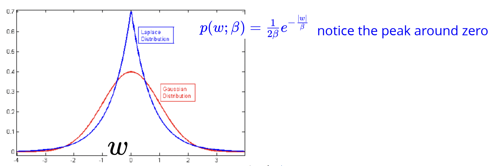And so minimizing the negative log-likelihood of this will give:
$$\sum_d \log p(w_d)=-\sum_d \frac{1}{\beta}|w_d|=-\frac{1}{\beta}||\mathbf{w}||_1$$So our cost function changes via by $J(w)\leftarrow J(w)+\lambda||\mathbf{w}||_1$, and this is known as L1 regularization or lasso regression.
Let's now investigate what specifically happens to the weight when adding L2 vs L1 regularization. Below shows curves of eight parameters/features corresponding to a specific type of cancer. As you move from right to left of each curve, the regularization coefficient $\lambda$ increases. In ridge or L2 regularization, we see that each curve emanates from the origin, which is the point where the regularization coefficient is so large that the cost doesn't matter (since the penalty is so big), and all weights are zero. The red dashed line shows the optimal regularization coefficient which produces eight non-zero values for the weights of our model.
In the lasso or L1 regularization, we see as we add regularization, the weights will approach and eventually hit zero for differing values of the regularization coefficient. Again, the red deashed line showing the optimal regularization coefficient in fact only has three non-zero weights. And so, L1 regularization typically results in sparse models.
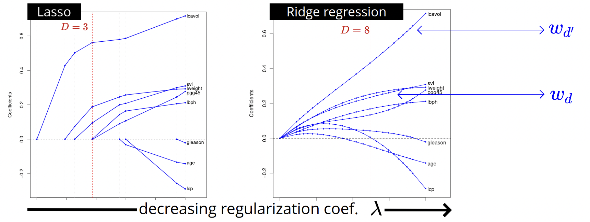For both L1 and L2 regularization, we are adding a term to the cost function that is based on the norm of the weights, and so it seems sensible that this can be generalized to $p-$norm of whatever vector you want to use. We can notice that this is the same thing as Lagrange multipliers, or rather $\min_w J(w)+\lambda ||\mathbf{w}||_p^p$ is equivalent to $\min_w J(w)$ subject to the constraint $||\mathbf{w}||_p^p\leq \tilde{\lambda}$ for an appropriate choice of $\tilde{\lambda}$. We can geometrically visualize the constraint and the isocontours of $J(w)$ for L1 and L2 norms:
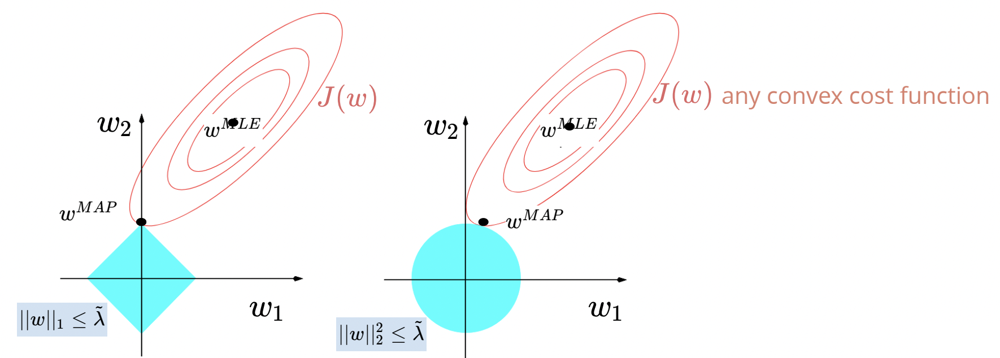And so the optimal solution is when the cost function contours intersect with your constraint, and for L1 norm, this intersection is more likely to be on an axis, which is why some of the weights go to zero. By contrast, the L2 constraint is more likely to intersect at points around the circular constraint that are not on the axes.
Below shows more examples of different $p$ values for the norms, and we can see that for $p\geq 1$, our constraints are convex and the intersection happens much more readily at points aways from the axes, but as $p\leq 1$, we introduce sparsity, since the contour intersection is more likely to occur on an axis, bring some of our weights to zero.
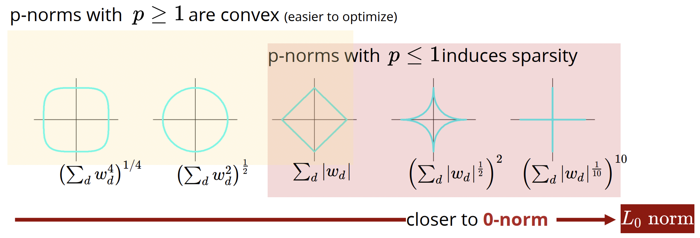In our code, Let's use the GradientDescent and LinearRegression classes from the previous lecture.
The only update we have made is in using l2_reg which sets the regularization coefficient $\lambda$ for L2 regularization.
This information is used when calculating the gradient to perform weight decay. Note that a good practice is to avoid penalizing the bias $w_0$.
Here, for the sake of visualization we penalize the bias as well.
class GradientDescent:
def __init__(self, learning_rate=.001, max_iters=1e4, epsilon=1e-8, record_history=False):
self.learning_rate = learning_rate
self.max_iters = max_iters
self.record_history = record_history
self.epsilon = epsilon
if record_history:
self.w_history = []
def run(self, gradient_fn, x, y, w):
grad = np.inf
t = 1
while np.linalg.norm(grad) > self.epsilon and t < self.max_iters:
grad = gradient_fn(x, y, w)
w = w - self.learning_rate * grad
if self.record_history:
self.w_history.append(w)
t += 1
return w
class LinearRegression:
def __init__(self, add_bias=True, l2_reg=0):
self.add_bias = add_bias
self.l2_reg = l2_reg
pass
def fit(self, x, y, optimizer):
if x.ndim == 1:
x = x[:, None]
if self.add_bias:
N = x.shape[0]
x = np.column_stack([x,np.ones(N)])
N,D = x.shape
def gradient(x, y, w):
yh = x @ w
N, D = x.shape
grad = .5*np.dot(yh - y, x)/N
grad += self.l2_reg* w
return grad
w0 = np.zeros(D)
self.w = optimizer.run(gradient, x, y, w0)
return self
def predict(self, x):
if self.add_bias:
x = np.column_stack([x,np.ones(N)])
yh = x@self.w
return yh
Now let's visualize the landscape of regularized cost function for different amounts of regularization and see the effect of regularization on gradient descent.
cost = lambda w, reg: .5*np.mean((w[0] + w[1]*x - y)**2) + reg*np.dot(w,w)/2
reg_list = [0, 1, 10]
fig, axes = plt.subplots(ncols=len(reg_list), nrows=1, constrained_layout=True, figsize=(15, 5))
for i, reg_coef in enumerate(reg_list):
optimizer = GradientDescent(learning_rate=.01, max_iters=50, record_history=True)
model = LinearRegression(optimizer, l2_reg=reg_coef)
model.fit(x,y, optimizer)
current_cost = lambda w: cost(w, reg_coef)
plot_contour(current_cost, [-20,20], [-5,5], 50, axes[i])
w_hist = np.vstack(optimizer.w_history)# T x 2
axes[i].plot(w_hist[:,1], w_hist[:,0], '.r', alpha=.8)
axes[i].plot(w_hist[:,1], w_hist[:,0], '-r', alpha=.3)
axes[i].set_xlabel(r'$w_0$')
axes[i].set_ylabel(r'$w_1$')
axes[i].set_title(f' lambda = {reg_coef}')
axes[i].set_xlim([-20,20])
axes[i].set_ylim([-5,5])
plt.show()
As we can, the added regularization penalty term brings down or decreases the optimal weight for both $w_0$ and $w_1$. Note that for large $\lambda$, although we see convergence, it won't be as good at maximizing the likelihood value.
An issue you might notice is that for L1 regularization, our cost function is not differentiable at zero (it's pretty pointy). To solve this, we can extend the our notion of derivatives to non-smooth functions by defining a sub-differential, which will be the set of all sub-derivatives at a point:
$$\partial f(\hat{w})=\left[\lim_{w\rightarrow \hat{w}^-}\frac{f(w)-f(\hat{w})}{w-\hat{w}}, \lim_{w\rightarrow \hat{w}^+}\frac{f(w)-f(\hat{w})}{w-\hat{w}}\right]$$If $f$ is differentiable at $\hat{w}$, then sub-differential has one member $\frac{d}{dw}f(\hat{w})$. Another way to think about it is the set of all lines you can make that are tangent at the non-smooth part $\hat{w}$, or rather:
$$\partial f(\hat{w})=\left\{g\in \mathbb{R}|f(w)>f(\hat{w})+g(w-\hat{w})\right\}$$And for the gradient, we have the same thing, known as the subgradient being a vector of sub-derivatives:
$$\partial f(\hat{\mathbf{w}})=\left\{\mathbf{g}\in \mathbb{R}^D| f(\mathbf{w})> f(\hat{\mathbf{w}})+\mathbf{g}^{\top}(\mathbf{w}-\hat{\mathbf{w}})\right\}$$When adding regularization, we also need to be careful about scaling our features. For example, if you are doing some unit conversion on your features, it may be common to write $\tilde{x}_d^{(n)}=\gamma_d x_d^{(n)}$ $\forall$ $d,n$, where $\gamma_d$ is some scaling constant. Now, for no regularization, our weights would simply scale accordingly, $\tilde{w}_d=\frac{1}{\gamma_d}w_d$ $\forall$ $d$, and so our solution doesn't change when we fit out model. This is because $||\mathbf{X}\mathbf{w}-\mathbf{y}||^2_2=||\tilde{\mathbf{X}}\tilde{\mathbf{w}}-\mathbf{y}||^2_2$.
However, with regularization, we are summing our weights, and so we are putting a penalty for how much our weight can scale up or down for a specific feature, i.e $||\tilde{\mathbf{w}}||_2^2\neq ||\mathbf{w}||^2_2$, so the optimal $\mathbf{w}$ will be different. In particular, features of different mean and variance will be penalized differently, so we would need to normalize our data to ensure that all features have the same mean and variance, i.e $x_d^{(n)}\leftarrow \frac{x_d^{(n)}-\mu_d}{\sigma_d}$, where:
\begin{align*} \mu_d & =\frac 1N x_d^{(n)} \\ \sigma_d^2 & = \frac{1}{N-1}\left(x_d^{(n)}-\mu_d\right)^2 \end{align*}